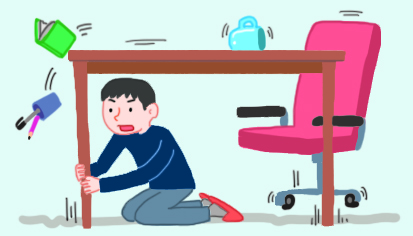

- 활동 1
- 활동 2
- 활동 3
-
옥
-
1지진 옥외 대피소의 표지판 모양을 알아보고,
우리 동네의 지진 대피소를 알아봐요. -
2주변에 지진 대피소가 없을 경우에는
조건이 전부충족되는 장소로 대피해요.
-
-
지진 대피
방법
탁자 아래에
들어가요.머리를 가리고
계단으로 나가요.넓은 장소로
대피해요. -
- 집 안, 집 밖
- 차 안, 전철 안,
승강기 안 - 산, 바다
- 다중 시설
(영화관 등) - 교실
-
-
탁자 아래로 들어가 몸을 보호하고, 흔들림이 멈추면 전기와 가스를 차단해요.
-
떨어지는 물건에 대비하여 가방이나 손으로 머리를 보호하며, 넓은 공간으로 대피해요.
-
-
-
비상등을 켜고 서서히 속도를 줄여 도로 오른쪽에 차를 세우고, 키를 꽂아 두고 대피해요.
-
손잡이나 기둥을 잡아 넘어지지 않도록 해요. 전철이 멈추면 안내에 따라 행동해요.
-
모든 층의 버튼을 눌러 가장 먼저 열리는 층에서 내린 후 계단을 이용해요. 지진 시에 승강기를 타면 절대 안돼요.
-
-
산사태, 절벽 붕괴에 주의하고 안전한 곳으로 대피해요. 바다에서 지진해일 특보가 발령되면 높은 곳으로 이동해야 해요.
-
흔들림이 멈출 때까지 가방으로 몸을 보호하다가 안내에 따라 침착하게 대피해요.
-
-
1선생님의 안내에 따라 책상 밑에 들어가 책상 다리를 잡아요.
-
2선생님의 안내에 따라 흔들림이 멈추면 차례대로 나가요.
-
3책가방 등으로 머리를 보호하며 안전하게 이동해요.
-
4건물에서 떨어진 넓은 장소(예운동장)로 대피해요.
-